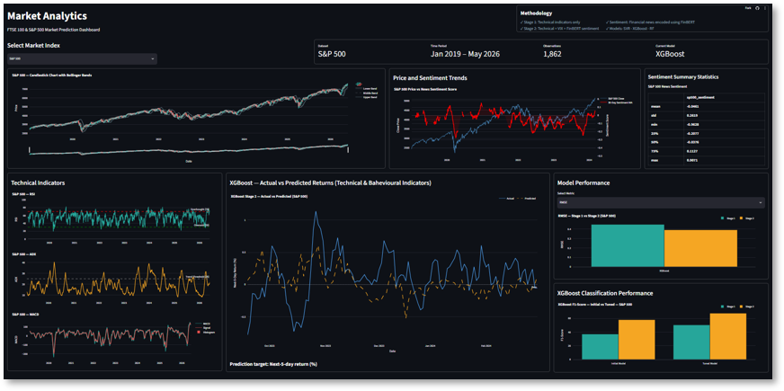
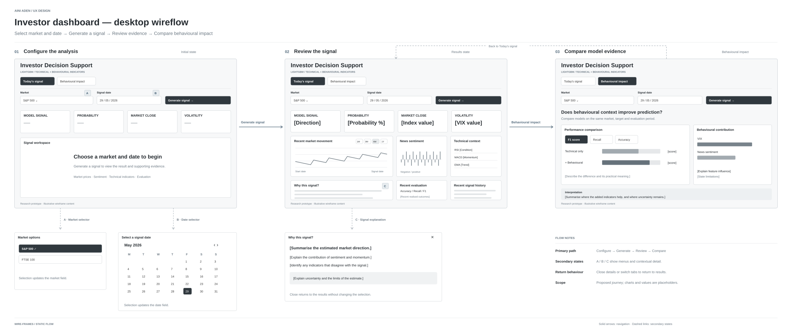
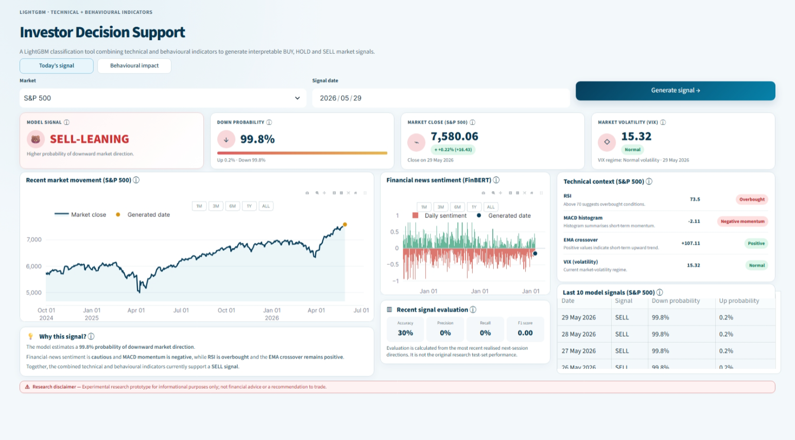

02 / 05 · Industry R&D project
Behavioural
investor signal
Helping investors compare, question and understand an uncertain financial prediction.
- Role
- Data science and UX design (individual contribution within a team of four)
- Designed for
- Self-directed investors who make decisions over weeks to months
- Status
- Redesign complete · Usability testing planned
- Tools
- Python, LightGBM, SHAP, Streamlit, Plotly, Figma, Optuna and GridSearch
Overview
I worked on a live R&D brief from Lambda BI Ltd, sourced through Uniworx and the University of Leicester. The team of four MSc Data Science students tested whether behavioural finance indicators (news sentiment and market fear) could improve financial prediction beyond technical indicators alone.
I independently built the LightGBM classification model, the explainability analysis and the Streamlit dashboard, then redesigned the dashboard around the investor.
How can an investor compare a technical baseline with behavioural information without trusting the model blindly?
The model results are mixed, and that shaped the design: an uncertain model needs an interface that helps people calibrate their trust.
Historical evaluation, not a forecast of investment returns.
01 Discover
From model outputs to investor questions.
My first dashboard moved the model out of notebooks, but it was built around the analysis, not the investor. It spread across several pages, needed a lot of scrolling, and left four basic questions unanswered:
- Did behavioural information improve the prediction?
- How confident is the model?
- What evidence shaped the result?
- Would it work in a different market?
These are hypotheses from reviewing my own interface and the model evidence. Investor testing is needed to validate them.
01 / Original
The starting point

02 Define
Make the behavioural contribution comparable.
I used the modelling process as product discovery, with two models that can be compared directly:
Technical only
Price, volume, momentum, trend and volatility.
Technical + behavioural
The above, plus news sentiment, the VIX (a market fear index) and rolling sentiment features.
Comparing them shows what behavioural data adds, instead of assuming it helps.
03 Design
One main journey, with the evidence close by.
Three principles:
Compare before concluding
Show both models side by side.
Separate signal from certainty
Keep direction, probability and evidence distinct.
Keep evidence traceable
Let investors move from a simple signal to the context behind it.
02 / Wireflow
Wireflow for the investor journey

Before → after
| Before (analysis-first) | After (signal-led) |
|---|---|
| Several pages and long scrolling | One overview with market and date controls |
| Models compared across separate pages | Both models' direction and probability side by side |
| The value of behavioural data was unclear | The change in confidence is shown directly |
| No clear limits | Prediction history and limitations stay in view |
Key design decisions
Show both models together
Side-by-side results make changes in direction and probability visible.
Keep probability beside direction
A label is quick to scan, and probability stops it reading as a certainty.
Reveal evidence progressively
The overview answers the immediate question, and the Behavioural impact tab supports deeper review.
Show the data limits
The behavioural model needs a timestamped news pipeline, so the interface separates historical evidence from live predictions.
Final dashboard
The redesigned overview puts comparison first: choose a market and date, review the signal and probability, then inspect the supporting context.
03 / Redesigned
The dashboard puts the comparison in view

- Model comparisonTechnical only vs technical + behavioural
- ProbabilityHow much confidence the behavioural data added or removed
- Five-day historyRecent predictions in context
- Market contextTechnical indicators, VIX and sentiment
- LimitationsWhat the signal cannot tell you
Prototype note: The current prototype uses BUY/HOLD/SELL labels. The next step is to test evidence-led wording, such as “Evidence leans negative · 58% probability”, with investors.
Final experienceA signal that can be compared and questioned.
View source ↗
Design constraint
There was no validated live-news pipeline, so I didn't present the behavioural model as a live prediction. Price and technical context can support current views, but a new behavioural prediction needs the same news-to-sentiment process used in training. I chose clarity and reliability over feature completeness.
04 Test
Check understanding, not just task completion.
Planned validation. No usability results yet.
I would run five moderated sessions with self-directed investors:
Compare
“Explain what changed between the two models.”
Watch for hesitation and wrong comparisons.Interpret uncertainty
“What does this probability mean, and what can't it guarantee?”
Watch for overconfidence.Find the evidence
“Show me why the model leans this way, and one limitation.”
Watch for findability.Next refinements
Test evidence-led labels against BUY/SELL, and review chart accessibility, keyboard navigation, contrast and reduced motion.
05 Outcome and learning
A clearer way to judge an uncertain signal.
The redesign brings comparison, context and limitations into one view, so an investor can judge the signal without having to trust it.
Make comparison visible
Show the technical and behavioural models side by side.
LearningF1 improved in both markets, but ROC-AUC and PR-AUC did not improve consistently. The interface shows the change without implying a better predictor.
Put evidence in context
Connect the signal to probability and supporting indicators.
LearningExplainability works best inside the interface, not in a separate report.
Show where trust stops
Keep data and market-transfer limits visible.
LearningWeak evidence and technical limits should shape what a product promises.
Next stepTest whether investors understand the signal and calibrate their trust in it.
UX
Problem Framing · Information Architecture · Interaction Design · Data Visualisation · UX Writing
Responsible AI
Explainability · Uncertainty Communication · Transparent Limitations
Research
Quantitative Comparison · Model Evaluation · External Validation
Build
Python · GitHub
ML
LightGBM · Optuna · SHAP
Prototype
Streamlit · Plotly